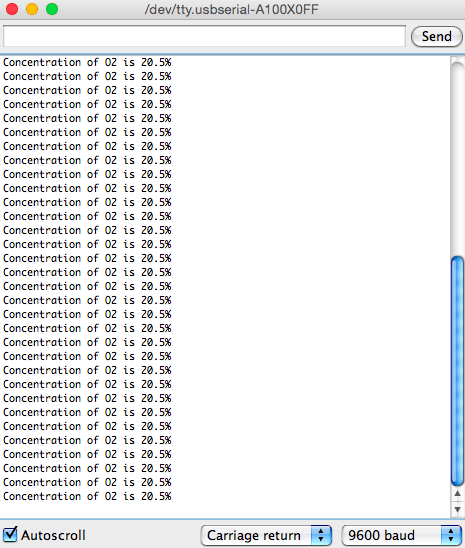
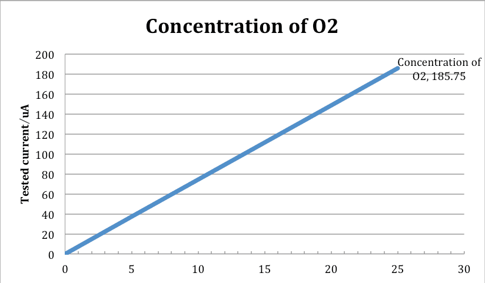

Grove-Gas Sensor (O₂) is a kind of sensor to test the oxygen concentration in air, which is based on the principle of the electrochemical cell to the original work. You can know clearly the current oxygen concentration when you output voltage values proportional to the concentration of oxygen and refer to the oxygen concentration linear characteristic graph. It's very suitable for detecting oxygen concentration in the environment protection. Grove - Gas Sensor(O₂) is an organic reaction module, it can provide a little current while putting it in the air, we don't need to provide an external power to it, and output voltage will change as time current changes.
Note that The sensor value only reflects the approximated trend of gas concentration in a permissible error range, it DOES NOT represent the exact gas concentration. The detection of certain components in the air usually requires a more precise and costly instrument, which cannot be done with a single gas sensor. If your project is aimed at obtaining the gas concentration at a very precise level, then we do not recommend this gas sensor.

| Items | Parameter |
| Measurement Range | 0-25%vol |
| Detect Life | two years |
| Sensitivity | 0.05～0.15 mA(in air) |
| Temperature Range | ﹣20℃～50℃ |
| Pressure range | QNE±10﹪ |
| Response Time | ≤15S |
| Humidity range | 0～99﹪RH Non-condensing |
| Stability | <2% |
This O2 sensor is an analog output sensor. An example application to get the volume of O2 in air demonstrated below:
Notice: Please power the Gas Sensor(O2) for more than 48 hrs (warm up time) before reading data for actual calculation.
Here is an example of O2 concentration controlled Buzzer. When Oxygen concentration gets lower than the minimum safe concentration, the Buzzer will ring.
1. Connect the module to the Analog port 0 of Grove - Basic Shield using the 4-pin grove cable. Connect Buzzer to Pin 3.
2. Plug the Grove - Basic Shield into Arduino. And connect Arduino to PC by using a USB cable.
3. Copy and paste the code below to a new Arduino sketch. Please read this if you do not know how to upload.
// test Grove - Gas Sensor(O2) float VoutArray[] = { 0.30769 ,20.00000, 40.00000 ,60.00000 ,120.61538 ,186.76923}; float O2ConArray[] = { 0.00018, 2.66129, 5.32258, 8.05300, 16.19851, 25.15367}; void setup() { // put your setup code here, to run once: Serial.begin(9600); } void loop() { // put your main code here, to run repeatedly: Serial.print("Vout ="); Serial.print(readO2Vout(A0)); Serial.print(" V, Concentration of O2 is "); Serial.println(readConcentration(A0)); delay(500); } float readO2Vout(uint8_t analogpin) { // Vout samples are with reference to 3.3V float MeasuredVout = analogRead(A0) * (3.3 / 1023.0); return MeasuredVout; } float readConcentration(uint8_t analogpin) { // Vout samples are with reference to 3.3V float MeasuredVout = analogRead(A0) * (3.3 / 1023.0); float Concentration = FmultiMap(MeasuredVout, VoutArray,O2ConArray, 6); float Concentration_Percentage=Concentration*100; /************************************************************************** The O2 Concentration in percentage is calculated based on wiki page Graph The data from the graph is extracted using WebPlotDigitizer http://arohatgi.info/WebPlotDigitizer/app/ VoutArray[] and O2ConArray[] are these extracted data. Using MultiMap, the data is interpolated to get the O2 Concentration in percentage. This implementation uses floating point arithmetic and hence will consume more flash, RAM and time. The O2 Concentration in percentage is an approximation and depends on the accuracy of Graph used. ***************************************************************************/ return Concentration_Percentage; } //This code uses MultiMap implementation from http://playground.arduino.cc/Main/MultiMap float FmultiMap(float val, float * _in, float * _out, uint8_t size) { // take care the value is within range // val = constrain(val, _in[0], _in[size-1]); if (val <= _in[0]) return _out[0]; if (val >= _in[size-1]) return _out[size-1]; // search right interval uint8_t pos = 1; // _in[0] allready tested while(val > _in[pos]) pos++; // this will handle all exact "points" in the _in array if (val == _in[pos]) return _out[pos]; // interpolate in the right segment for the rest return (val - _in[pos-1]) * (_out[pos] - _out[pos-1]) / (_in[pos] - _in[pos-1]) + _out[pos-1]; }
4. When the sensor is in room air, the buzzer will be silent. Blow the sensor. At this time, if Oxygen concentration is lower than set threshold, the Buzzer will ring. You can check the output voltage (amplify 201) after opening the Serial Monitor.

We tested it inside office, so the concentration of O2 is about 20.5%.
Notice: We have adjusted the figure in a clear air. We have updated it in the program, please refer to the program instead of datasheet.

Grove - Gas Sensor(O2) v1.0 Eagle File
Grove - Gas Sensor(O2) v1.1 Eagle File